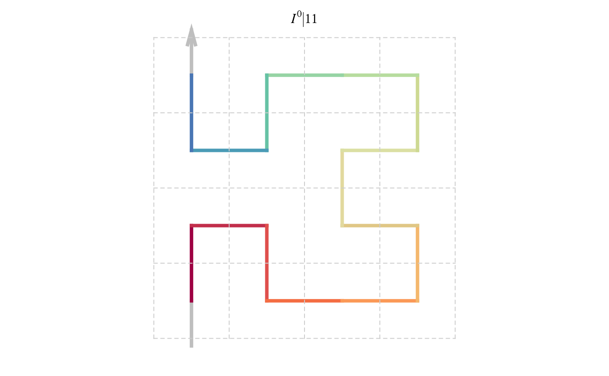
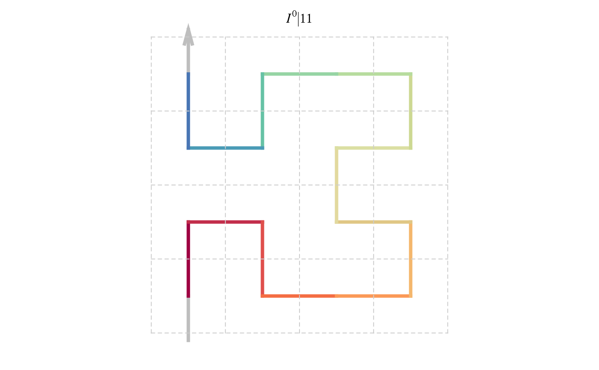

The graphics object
# S4 method for sfc_base
sfc_grob(p)
# S4 method for sfc_sequence
sfc_grob(p, bases = NULL, extend = FALSE, title = FALSE, ...)
# S3 method for sfc_sequence
plot(x, bases = NULL, grid = FALSE, ...)
# S4 method for sfc_nxn
sfc_grob(p, bases = p@rules@bases, extend = FALSE, title = FALSE, ...)
# S3 method for sfc_nxn
plot(x, grid = FALSE, ...)Arguments
- p
The corresponding object.
- bases
A list of base patterns, consider to use
BASE_LIST.- extend
Whether to add the entering and leaving segments?
- title
Whether to add title on top of the curve?
- ...
Other arguments passed to
grid::viewport()orsfc_grob().- x
The corresponding object.
- grid
Whether to add grid lines on the plot?
Value
A grid::grob() object.
Details
If p is an sfc_sequence and if p contains base patterns defined in "I/J/R/L/U/B/D/P/Q/C",
the default BASE_LIST is automatically used for bases. If p is an sfc_nxn object, bases
is already stored in p and it is passed to this function automatically.
Examples
sfc_grob(BASE_I)
#> gTree[GRID.gTree.4]
plot(sfc_hilbert("I", "11"))
 plot(sfc_sequence("IIIRRR"))

plot(sfc_sequence("IIIRRR"))
